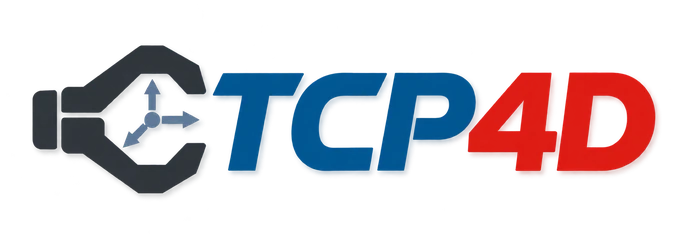
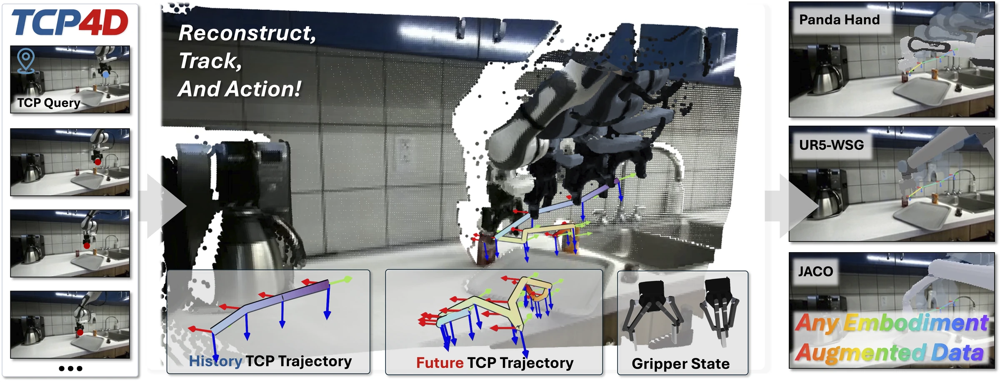
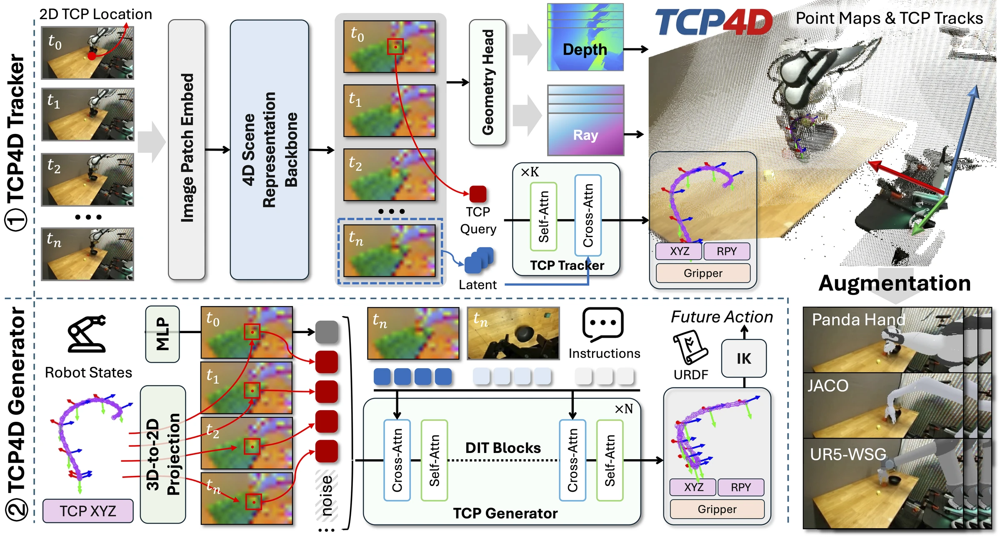

TCP4D: A Unified Tool-Center-Point Tracking
and Generation Model for Robot Manipulation
Preprint 2026
OVERVIEW
From observing motion to generating action.
TCP4D shares a 4D scene representation between its Tracker and Generator. The tracker recovers metric TCP poses, gripper states, scene geometry and camera parameters from RGB videos and initial 2D TCP queries. The generator samples features along the recovered tracks and combines them with current robot observations and language to generate future TCP trajectories. We also introduces a cross-embodiment augmentation pipeline that retargets recovered motion and synthesizes target-robot observations.

Method

01 / TCP TRACKING
A point in the image. A trajectory in 3D.
Recover TCP motion, gripper states, and scene geometry directly from RGB videos.
02 / FEW-SHOT ADAPTATION
A new embodiment, with ten demonstrations.
Transfer the DROID-pretrained Tracker to Berkeley AUTOLAB UR5.
8.85 mm ATE · 98.48% gripper accuracy after ten-shot adaptation.
| Method | APD ↑ (%) | MPE ↓ (mm) | ATE ↓ (mm) | RRE ↓ (°) | RTE ↓ (mm) | Gripper ↑ (%) |
|---|---|---|---|---|---|---|
| MoSE3† | 14.39 | 88.07 | 44.56 | 1.17 | 6.45 | — |
| TCP4D · 3 demos | 48.27 | 18.48 | 12.22 | 1.03 | 4.28 | 97.05 |
| TCP4D · 10 demos | 64.28 | 11.08 | 8.85 | 0.96 | 3.87 | 98.48 |
SE(3) errors use Sim(3) alignment. † MoSE3 uses its native dense-point SE(3) outputs followed by post-processing.
03 / CROSS-EMBODIMENT AUGMENTATION
The same motion. A different robot.
Turn existing RGB demonstrations into training data for alternative embodiments.

AUGMENTATION FOR POLICY LEARNING
On ARX-X5, combining source and augmented demonstrations raises mean success from 30.5% to 72.0% — a gain of 41.5 percentage points over augmented-only training.
Four tasks · 50 evaluation episodes per task and policy–embodiment pair · Diffusion Policy04 / REAL-WORLD MANIPULATION
Predictions become physical actions.
Placing pens and stacking bowls on the CoBoT Magic platform.
83.33% success placing pens · 73.33% stacking bowls. 60 training demonstrations and 30 evaluation trials per method.
05 / BENCHMARKS
Tracking accuracy. Manipulation performance.
Selected metrics from the paper. APD: average percentage of points; MPE: mean position error; ATE: absolute trajectory error; RRE/RTE: relative rotation/translation error; SR: tracking success rate.
TCP tracking on DROID and unseen RoboLab
| Method | APD ↑ (%) | MPE ↓ (mm) | ATE ↓ (mm) | RRE ↓ (°) | RTE ↓ (mm) | Gripper ↑ (%) | SR ↑ (%) |
|---|---|---|---|---|---|---|---|
| 4RC* | 8.74 | 107.56 | 84.63 | 8.37 | 13.29 | — | 79.56 |
| Track4World* | 3.68 | 186.95 | 92.55 | 10.35 | 12.42 | — | 66.05 |
| Any4D* | 2.32 | 242.01 | 96.71 | 10.76 | 13.10 | — | 56.09 |
| VDPM* | 4.67 | 191.06 | 85.40 | 8.05 | 11.58 | — | 76.82 |
| CoTracker3* | 14.04 | 91.76 | 70.35 | 16.14 | 22.60 | — | 63.23 |
| MoSE3† | 12.38 | 103.43 | 67.65 | 1.27 | 5.96 | — | 89.64 |
| TCP4D (ours) | 74.78 | 11.85 | 7.60 | 1.03 | 3.40 | 95.84 | 100.00 |
| Method | APD ↑ (%) | MPE ↓ (mm) | ATE ↓ (mm) | RRE ↓ (°) | RTE ↓ (mm) | Gripper ↑ (%) | SR ↑ (%) |
|---|---|---|---|---|---|---|---|
| 4RC* | 4.92 | 164.53 | 91.37 | 7.16 | 8.59 | — | 90.62 |
| Track4World* | 2.44 | 208.05 | 95.43 | 9.50 | 8.88 | — | 82.85 |
| Any4D* | 1.15 | 238.02 | 106.49 | 8.41 | 8.42 | — | 74.63 |
| VDPM* | 9.90 | 111.90 | 70.90 | 5.78 | 8.59 | — | 96.33 |
| CoTracker3* | 8.78 | 131.39 | 85.12 | 15.80 | 17.63 | — | 75.38 |
| MoSE3† | 8.58 | 130.18 | 85.45 | 0.99 | 4.65 | — | 94.18 |
| TCP4D (ours) | 43.71 | 28.42 | 16.07 | 6.80 | 4.83 | 81.92 | 100.00 |
SE(3) errors use Sim(3) alignment. * TCP poses recovered by rigid fitting of predicted point tracks. † MoSE3 uses native dense-point SE(3) outputs followed by post-processing. SR measures successfully processed tracking windows, rather than manipulation task success. Full depth results and protocols are in the paper.
Robot manipulation on RoboTwin 2.0
48 tasks · 100 trials per task. C2C: clean-to-clean. C2R: clean-to-random.
| Method | Primary view | C2C ↑ | C2R ↑ |
|---|---|---|---|
| EventVLA | head | 65.71 | 14.50 |
| AHA-WAM | head | 64.38 | 2.77 |
| Xiaomi Robotics-0 | head | 62.79 | 17.85 |
| GalaxeaVLA | head | 62.73 | 12.31 |
| Discrete Forcing | head | 59.25 | 11.04 |
| StarVLA | head | 46.73 | 3.21 |
| π₀ | head | 45.21 | 16.15 |
| DP3 | head | 54.27 | 4.04 |
| RDT | head | 33.92 | 13.25 |
| ACT | head | 29.25 | 1.79 |
| DP | head | 27.31 | 0.67 |
| TCP4D (ours) | third-person | 69.19 | 10.94 |
TCP4D’s Generator is trained solely on clean RoboTwin demonstrations. Performance drops under environmental randomization; robustness to this distribution shift remains a limitation.
CITATION
BibTeX
@misc{peng2026tcp4d,
title = {TCP4D: A Unified Tool-Center-Point Tracking and
Generation Model for Robot Manipulation},
author = {Peng, Haosong and Liu, Xiangyang and Zhang, Zhengshen
and Fan, Yunfeng and Qi, Tianyu and Xia, Xin
and Zhan, Yufeng and Xu, Wenchao},
year = {2026},
note = {Preprint},
url = {https://livioni.github.io/TCP4D/}
}